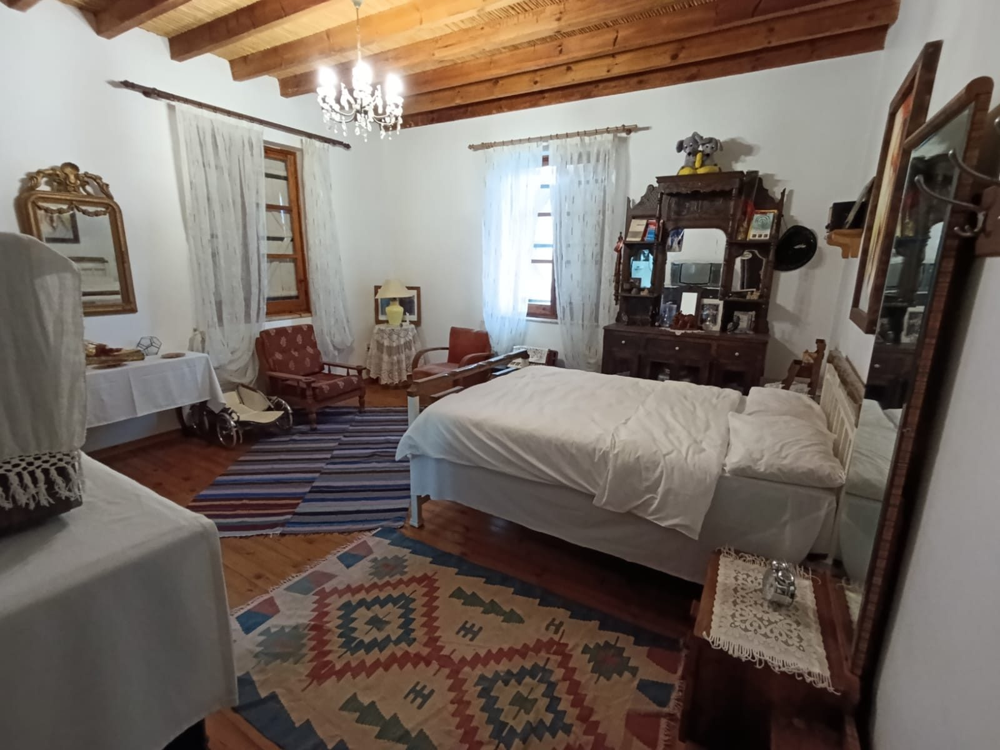
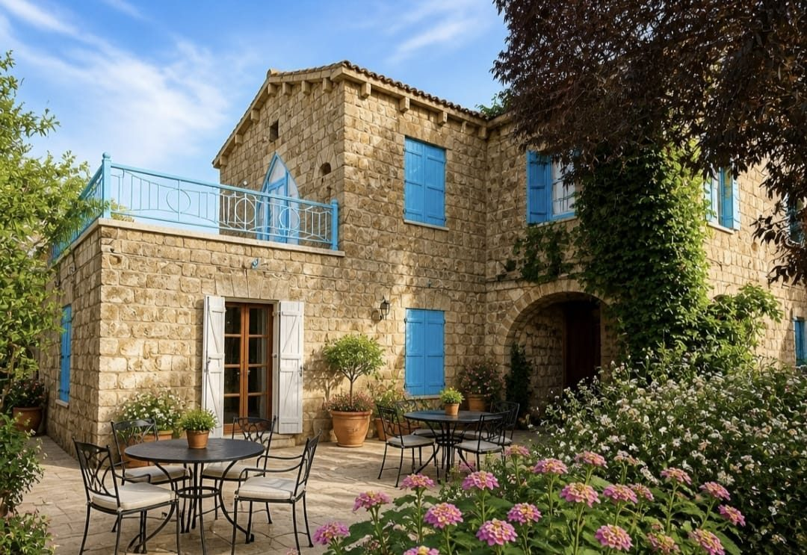
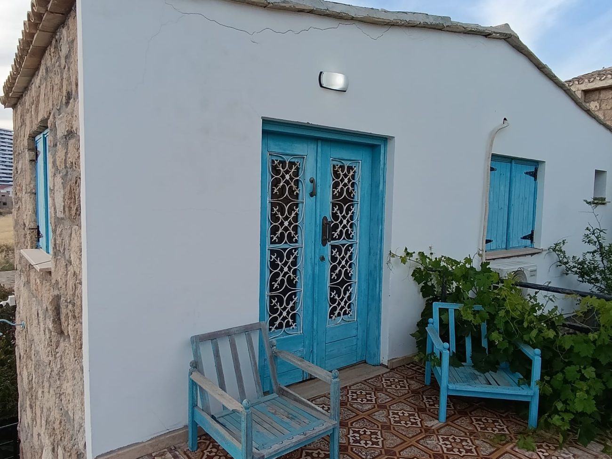
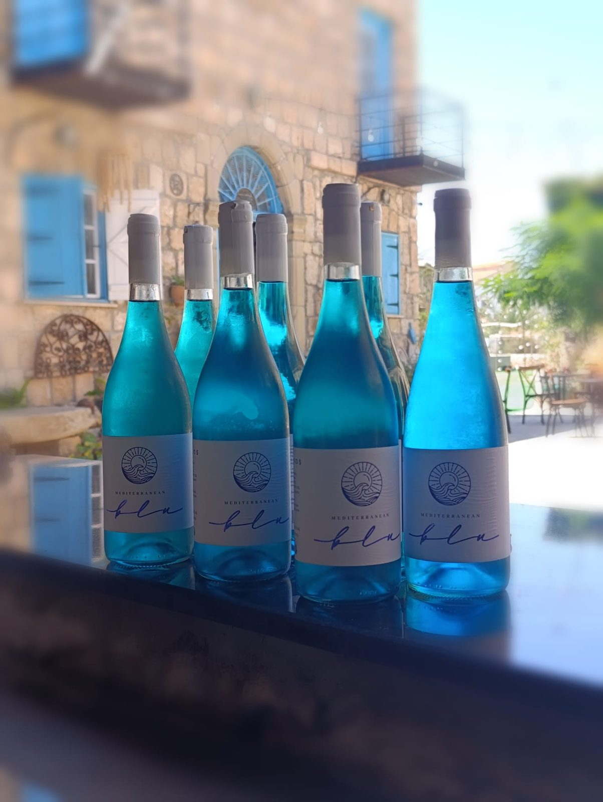
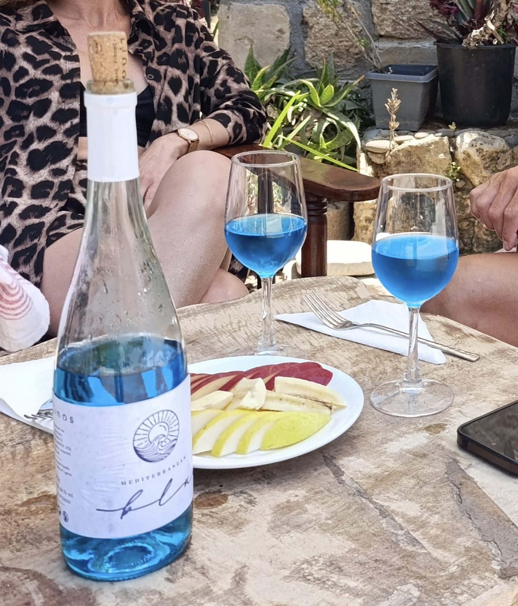
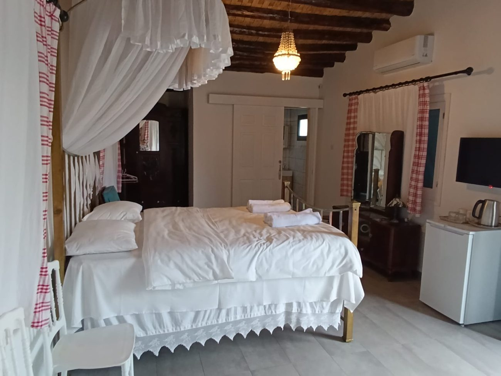
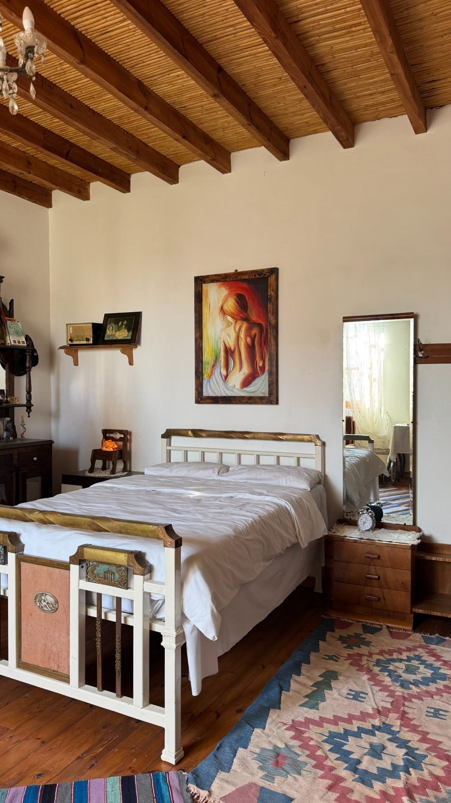

Heritage Room
Warm wood ceilings, vintage pieces and a calm atmosphere.
Traditional stone architecture, turquoise doors, cozy vintage rooms, breakfast included and the sea just 10 minutes away on foot.
Bademli Stone House is a warm boutique guesthouse in Iskele, North Cyprus. A peaceful courtyard, authentic stone walls, vintage rooms and island hospitality create the feeling of a home away from home.


At Bademli Stone House, guests can enjoy exclusive Mediterranean blue wine. Its bright color, refreshing taste and beautiful presentation make it one of the most memorable details of your stay — especially in our peaceful stone courtyard.


Authentic interiors, clean white bedding, vintage furniture, air conditioning, TV, kettle and cozy details.

Warm wood ceilings, vintage pieces and a calm atmosphere.

Comfortable bed, towels, air conditioning and essentials.

Bright, authentic and comfortable for couples and travelers.
Stone walls, blue shutters, vintage rooms, a green courtyard and warm island evenings.
Muhtar Ahmet Hasim sokak, Iskele, Kuzey Kibris